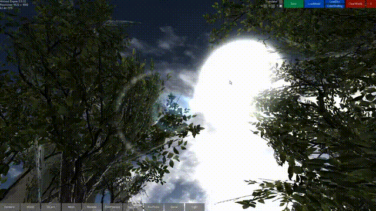

Smooth Lens Flare in the Geometry Shader
This is a historical feature from the Wicked Engine, meaning it was implemented a few years ago, but at the time it was a big step for me.

I wanted to implement simple textured lens flares but at the time all I could find was by using occlusion queries to determine if a lens flare should be visible or not. A simpler solution was needed for me. At the time I was already using the geometry shader for billboard particles, so I wanted to make further use of them here. I also wanted it to smoothly transition from fully visible, to invisible, withouth it popping when the light source goes behind an occluder. It is also my first blog post so I wanted to start with something simple.
The idea is that for a light source emitting a lensflare which is on the screen, I don’t check its visibility by occlusion query, but drawing a single vertex for it (for each flare). The vertex goes through a pass through vertex shader, then arrives at the geometry shader stage, where the occlusion is detected by checking the light source against the scene’s depth buffer. A simple solution is checking the light source’s screenspace position Z value to the depth at the XY value. This will not yield smooth results though. If the pixel is occluded, then the flare is visible, else it is not. It could be enough in cases where the geometry is predictable, like buildings, for example. However it looks extremely cheap when it is vegetation that occludes the flare, because it consists of many holes, which could be swaying in the wind making the flare flicker.
For smoothening out the popping, I use the technique which is used for the PCF shadow softening. Namely, check all the depth values in the current depth’s surroundings then average them to measure the occlusion. Thus you get the opacity value by dividing the not occluded sample count by the number of taken samples.
If there is at least one value in the surroundings which is not occluded (opacity > 0), then I spawn the flare billboards with the corresponding textures.
Prior to the shader, I project the light’s World position onto the screen with the appropriate viewprojection matrix, and send the projected light position to the shader.
Here comes the geometry shader (Can’t I format here better?):
// constant buffer
CBUFFER(LensFlareCB, CBSLOT_OTHER_LENSFLARE)
{
float4 xSunPos; // light position (projected)
float4 xScreen; // screen dimensions
};
struct InVert
{
float4 pos : SV_POSITION;
nointerpolation uint vid : VERTEXID;
};
struct VertextoPixel{
float4 pos : SV_POSITION;
float3 texPos : TEXCOORD0; // texture coordinates (xy) + offset(z)
nointerpolation uint sel : TEXCOORD1; // texture selector
nointerpolation float4 opa : TEXCOORD2; // opacity + padding
};
// Append a screen space quad to the output stream:
inline void append(inout TriangleStream<VertextoPixel> triStream, VertextoPixel p1, uint selector, float2 posMod, float2 size)
{
float2 pos = (xSunPos.xy-0.5)*float2(2,-2);
float2 moddedPos = pos*posMod;
float dis = distance(pos,moddedPos);
p1.pos.xy=moddedPos+float2(-size.x,-size.y);
p1.texPos.z=dis;
p1.sel=selector;
p1.texPos.xy=float2(0,0);
triStream.Append(p1);
p1.pos.xy=moddedPos+float2(-size.x,size.y);
p1.texPos.xy=float2(0,1);
triStream.Append(p1);
p1.pos.xy=moddedPos+float2(size.x,-size.y);
p1.texPos.xy=float2(1,0);
triStream.Append(p1);
p1.pos.xy=moddedPos+float2(size.x,size.y);
p1.texPos.xy=float2(1,1);
triStream.Append(p1);
}
// pre-baked offsets
// These values work well for me, but should be tweakable
static const float mods[] = { 1,0.55,0.4,0.1,-0.1,-0.3,-0.5 };
[maxvertexcount(4)]
void main(point InVert p[1], inout TriangleStream<VertextoPixel> triStream)
{
VertextoPixel p1 = (VertextoPixel)0;
// Determine flare size from texture dimensions
float2 flareSize=float2(256,256);
switch(p[0].vid){
case 0:
texture_0.GetDimensions(flareSize.x,flareSize.y);
break;
case 1:
texture_1.GetDimensions(flareSize.x,flareSize.y);
break;
case 2:
texture_2.GetDimensions(flareSize.x,flareSize.y);
break;
case 3:
texture_3.GetDimensions(flareSize.x,flareSize.y);
break;
case 4:
texture_4.GetDimensions(flareSize.x,flareSize.y);
break;
case 5:
texture_5.GetDimensions(flareSize.x,flareSize.y);
break;
case 6:
texture_6.GetDimensions(flareSize.x,flareSize.y);
break;
default:break;
};
// determine depthmap dimensions (could be screen dimensions from the constantbuffer)
float2 depthMapSize;
texture_depth.GetDimensions(depthMapSize.x,depthMapSize.y);
flareSize /= depthMapSize;
// determine the flare opacity:
// These values work well for me, but should be tweakable
const float2 step = 1.0f / (depthMapSize*xSunPos.z);
const float2 range = 10.5f * step;
float samples = 0.0f;
float accdepth = 0.0f;
for (float y = -range.y; y <= range.y; y += step.y)
{
for (float x = -range.x; x <= range.x; x += step.x)
{
samples += 1.0f;
// texture_depth is non-linear depth (but it could work for linear too with linear reference value)
// SampleCmpLevelZero also makes a comparison by using a LESS_EQUAL comparison sampler
// It compares the reference value (xSunPos.z) to the depthmap value.
// Returns 0.0 if all samples in a bilinear kernel are greater than reference value
// Returns 1.0 if all samples in a bilinear kernel are less or equal than refernce value
// Can return in between values based on bilinear filtering
accdepth += (texture_depth.SampleCmpLevelZero(sampler_cmp_depth, xSunPos.xy + float2(x, y), xSunPos.z).r);
}
}
accdepth /= samples;
p1.pos = float4(0, 0, 0, 1);
p1.opa = float4(accdepth, 0, 0, 0);
// Make a new flare if it is at least partially visible:
if( accdepth>0 )
append(triStream,p1,p[0].vid,mods[p[0].vid],flareSize);
}
The pixel shader just samples the appropriate texture with the texture
coordinates:
struct VertextoPixel{
float4 pos : SV_POSITION;
float3 texPos : TEXCOORD0;
nointerpolation uint sel : TEXCOORD1;
nointerpolation float4 opa : TEXCOORD2;
};
float4 main(VertextoPixel PSIn) : SV_TARGET
{
float4 color=0;
// todo: texture atlas or array
switch(PSIn.sel)
{
case 0:
color = texture_0.SampleLevel(sampler_linear_clamp, PSIn.texPos.xy, 0);
break;
case 1:
color = texture_1.SampleLevel(sampler_linear_clamp, PSIn.texPos.xy, 0);
break;
case 2:
color = texture_2.SampleLevel(sampler_linear_clamp, PSIn.texPos.xy, 0);
break;
case 3:
color = texture_3.SampleLevel(sampler_linear_clamp, PSIn.texPos.xy, 0);
break;
case 4:
color = texture_4.SampleLevel(sampler_linear_clamp, PSIn.texPos.xy, 0);
break;
case 5:
color = texture_5.SampleLevel(sampler_linear_clamp, PSIn.texPos.xy, 0);
break;
case 6:
color = texture_6.SampleLevel(sampler_linear_clamp, PSIn.texPos.xy, 0);
break;
default:break;
};
color *= 1.1 - saturate(PSIn.texPos.z);
color *= PSIn.opa.x;
return color;
}
That's it, I hope it was useful. 🙂